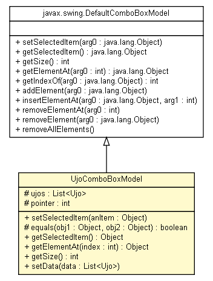

net.ponec.jworksheet.gui.models
Class UjoComboBoxModel

java.lang.Object
 javax.swing.AbstractListModel
javax.swing.DefaultComboBoxModel
net.ponec.jworksheet.gui.models.UjoComboBoxModel
javax.swing.AbstractListModel
javax.swing.DefaultComboBoxModel
net.ponec.jworksheet.gui.models.UjoComboBoxModel
- All Implemented Interfaces:
- java.io.Serializable, javax.swing.ComboBoxModel, javax.swing.ListModel, javax.swing.MutableComboBoxModel
public class UjoComboBoxModel
- extends javax.swing.DefaultComboBoxModel
UjoComboBox Model
- See Also:
- Serialized Form
|
Field Summary |
protected int |
pointer
|
protected java.util.List<Ujo> |
ujos
|
| Fields inherited from class javax.swing.AbstractListModel |
listenerList |
|
Constructor Summary |
UjoComboBoxModel()
Creates a new instance of UjoComboBoxModel |
UjoComboBoxModel(java.util.List ujos)
Creates a new instance of UjoComboBoxModel |
| Methods inherited from class javax.swing.DefaultComboBoxModel |
addElement, getIndexOf, insertElementAt, removeAllElements, removeElement, removeElementAt |
| Methods inherited from class javax.swing.AbstractListModel |
addListDataListener, fireContentsChanged, fireIntervalAdded, fireIntervalRemoved, getListDataListeners, getListeners, removeListDataListener |
| Methods inherited from class java.lang.Object |
clone, equals, finalize, getClass, hashCode, notify, notifyAll, toString, wait, wait, wait |
| Methods inherited from interface javax.swing.ListModel |
addListDataListener, removeListDataListener |
ujos
protected java.util.List<Ujo> ujos
pointer
protected int pointer
UjoComboBoxModel
public UjoComboBoxModel()
- Creates a new instance of UjoComboBoxModel
UjoComboBoxModel
public UjoComboBoxModel(java.util.List ujos)
- Creates a new instance of UjoComboBoxModel
setSelectedItem
public void setSelectedItem(java.lang.Object anItem)
- Specified by:
setSelectedItem in interface javax.swing.ComboBoxModel- Overrides:
setSelectedItem in class javax.swing.DefaultComboBoxModel
equals
protected boolean equals(java.lang.Object obj1,
java.lang.Object obj2)
- is equals
getSelectedItem
public java.lang.Object getSelectedItem()
- Specified by:
getSelectedItem in interface javax.swing.ComboBoxModel- Overrides:
getSelectedItem in class javax.swing.DefaultComboBoxModel
getElementAt
public java.lang.Object getElementAt(int index)
- Specified by:
getElementAt in interface javax.swing.ListModel- Overrides:
getElementAt in class javax.swing.DefaultComboBoxModel
getSize
public int getSize()
- Specified by:
getSize in interface javax.swing.ListModel- Overrides:
getSize in class javax.swing.DefaultComboBoxModel
setData
public void setData(java.util.List<Ujo> data)
- Set Ujo Data
Copyright © 2007-2009 PPonec